채널: 디자인하는AI | 길이: 19:47 | 날짜: 2026-07-01
LUMÉ의 랜딩 페이지를 만든다. 목표는 단순 이미지 시안 생성이 아니라, Codex 데스크톱 앱 안에서 시안 생성, 에셋 분리, React/Tailwind 구현, 반응형 수정, 애니메이션 추가, 커스텀 도메인 배포까지 한 번에 보여주는 것이다. 중간에 Hostinger 호스팅 서비스 간접 광고가 포함되어 있음을 명시한다. 최종적으로 로컬에서만 보이던 사이트를 실제 인터넷 주소로 접속 가능한 상태까지 만든다.나 대신 승인으로 바꾸면 위험한 작업을 제외한 명령은 매번 확인 없이 진행되어 작업 흐름이 빨라진다. 모델 인텔리전스는 작업 복잡도에 따라 높고 낮음을 고를 수 있지만, 영상에서는 우선 중간으로 설정한다./로 스킬을 검색해 imagegen frontend 계열 스킬을 선택하는 흐름을 보여준다. 이 스킬은 조잡한 AI 느낌을 줄이고, 섹션별 가로 이미지를 정교하게 나누어 실무용 웹페이지 시안을 뽑도록 돕는 업무 매뉴얼 역할을 한다.Body width 1920px, Content max-width 1440px, 좌우 마진 각 240px처럼 데스크톱 브라우저 기준을 명확히 적는다. 생성 모델이 데스크톱 웹을 태블릿처럼 크게 만들거나 UI 요소를 과하게 키우는 경향을 막기 위해 전체 가로 폭, 컨테이너 최대 너비, 바깥 마진을 픽셀 단위로 지정한다. 또한 섹션은 Navigation, Hero, Brand Philosophy, Product Collection, Ingredients Editorial, Ritual Guide, Results, Newsletter, Footer의 총 9개로 잡는다.47,988원으로 표시되고, 무료 도메인 혜택을 받기 위해 기간은 최소 단위인 12개월을 추천한다.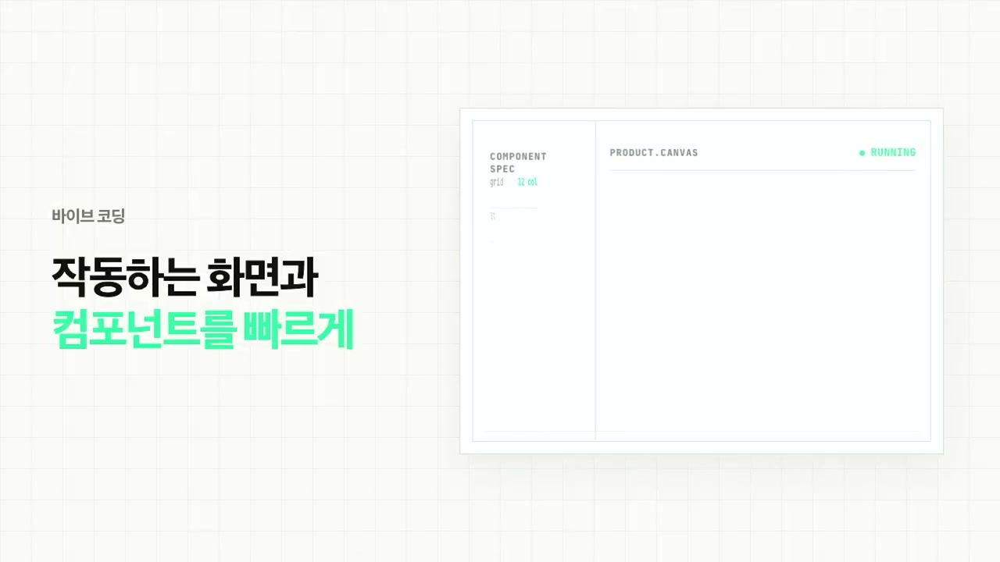
발표자는 바이브 코딩이 빠르지만 초반 디자인 품질을 보장하지는 않는다고 본다. 작동 화면이나 컴포넌트를 빠르게 만드는 데는 좋지만, 처음부터 코드로 생성하면 결과물이 평범하거나 사용자의 의도와 다르게 나올 수 있다. 그래서 먼저 비트맵 기반 웹사이트 시안을 만들고, 그 시안을 기준으로 개발하는 흐름을 제안한다. 이 방식은 전체 무드, 실험적 레이아웃, 복잡한 디테일을 코드보다 자유롭게 탐색하게 해준다.
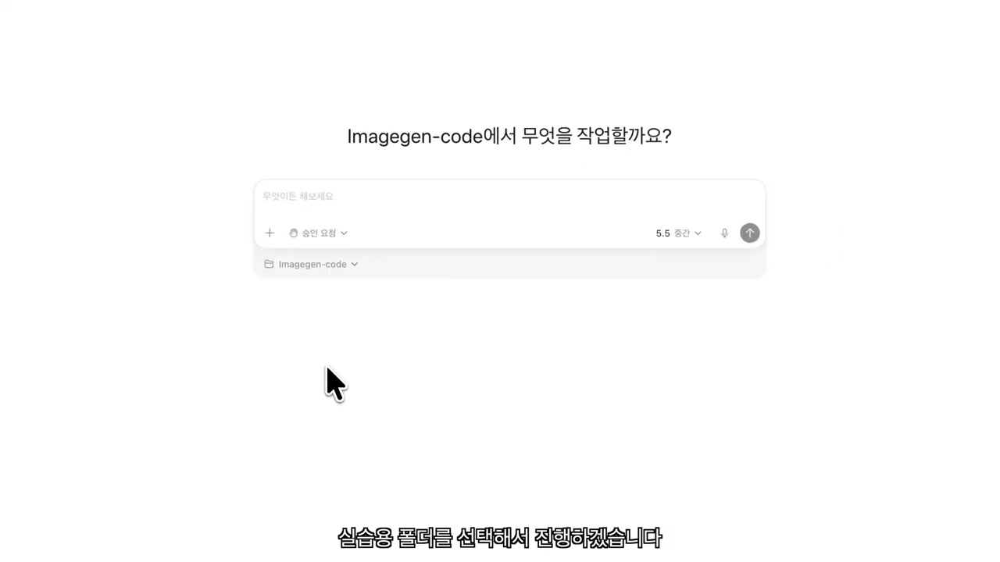
모든 과정은 Codex 데스크톱 앱에서 진행된다. 사용자는 앱을 설치하고 로그인한 뒤, 프로젝트 파일을 읽고 생성하고 수정할 로컬 폴더를 지정한다. 권한은 나 대신 승인으로 바꾸면 위험한 작업을 제외하고는 명령을 자동 승인해 반복 확인을 줄인다. 모델 성능은 작업 복잡도에 따라 조정 가능하며, 영상에서는 중간값으로 시작한다.
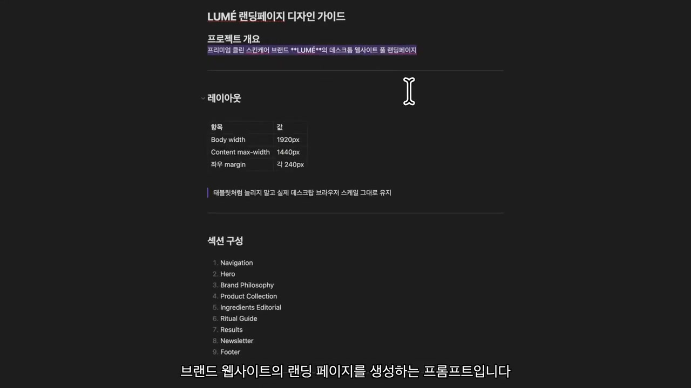
결과물의 퀄리티는 “프롬프트”와 “스킬” 두 가지에 크게 좌우된다. LUMÉ 예제에서는 데스크톱 웹 기준의 폭, 컨테이너, 마진을 수치로 지정해 태블릿처럼 보이는 결과를 막는다. 동시에 섹션 구성은 9개로 나누되 너무 세부적으로 묶지 않아 이미지 모델이 창의적 변형을 만들 수 있게 한다. 스킬은 웹페이지 시안 이미지를 섹션별로 정교하게 생성하도록 돕는 보조 지침으로 사용된다.
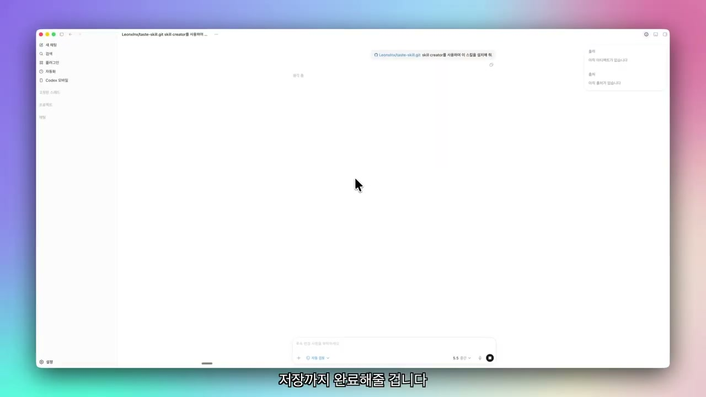
영상에서는 GitHub의 taste-skill 계열 저장소에서 스킬을 설치하는 흐름을 설명한다. 저장소 URL을 복사해 Codex 프롬프트에 넣고, 스킬 크리에이터로 설치해 달라고 요청하면 Codex가 스킬을 저장까지 처리한다. 설치 후에는 Codex 앱을 한 번 재시작해야 한다. 이후 /를 입력해 imagegen frontend 스킬을 검색하고 선택한 뒤 이미지 생성 프롬프트와 함께 사용한다.
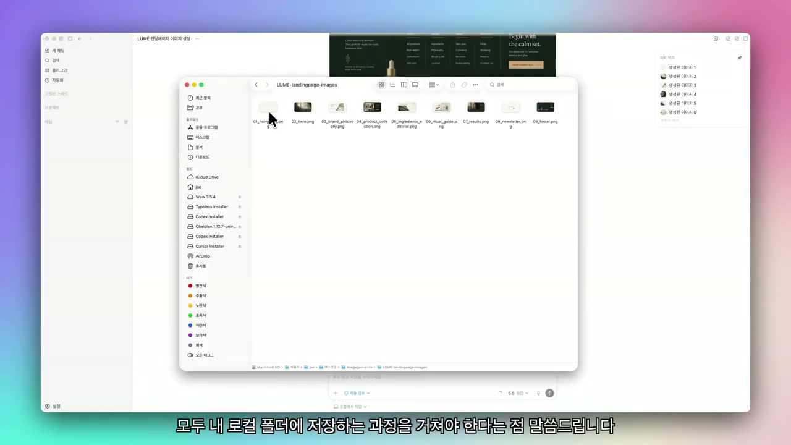
프롬프트는 가상의 프리미엄 클린 스킨케어 브랜드 LUMÉ의 랜딩 페이지를 만드는 내용이다. 브랜드 철학, 제품 컬렉션, 성분 소개, 사용법 가이드, 소셜 프루프, 뉴스레터, 푸터까지 섹션별 이미지가 순차 생성된다. 생성 이미지는 나중에 실제 개발에서 호스팅 서버에 올려 불러와야 하므로 별도 저장이 필요하다. 발표자는 코드 파일과 달리 이미지 생성물은 자동으로 프로젝트 폴더에 남지 않을 수 있다는 점을 주의시킨다.
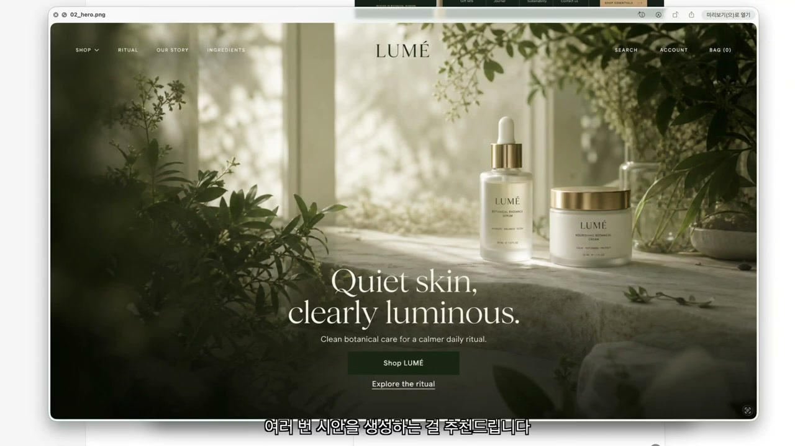
생성 결과는 코드가 아니라 비트맵 이미지지만, 사선 크롭, 얇은 라인, 레이어드 배치 같은 실험적 디테일이 돋보인다. 발표자는 이런 디자인은 순수 바이브 코딩만으로 구현하기 어렵거나 많은 수정이 필요하다고 판단한다. 같은 프롬프트를 여러 번 돌리면 톤은 유지하면서 다른 레이아웃이 나오므로, 섹션별로 좋은 부분만 선별해 조립할 수 있다. 이 방식이 이미지 기반 탐색의 핵심 장점으로 제시된다.
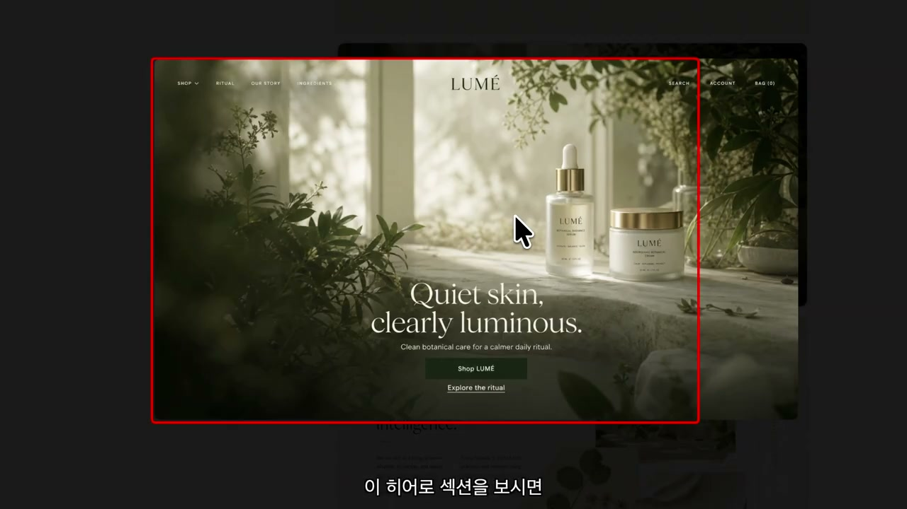
히어로 섹션 개발에서는 배경 이미지와 코드 UI를 분리하는 것이 중요하다. 배경 전체는 이미지 에셋으로 쓰되, 내비게이션, 로고, 중앙 텍스트, 메인 카피, CTA 버튼은 코드로 구현해야 한다. 그래서 원본 시안에서 UI 요소를 제거한 깨끗한 배경 이미지를 별도로 생성한다. 웹용과 모바일용 배경을 각각 만들어 반응형에서도 일관성이 훼손되지 않도록 한다.
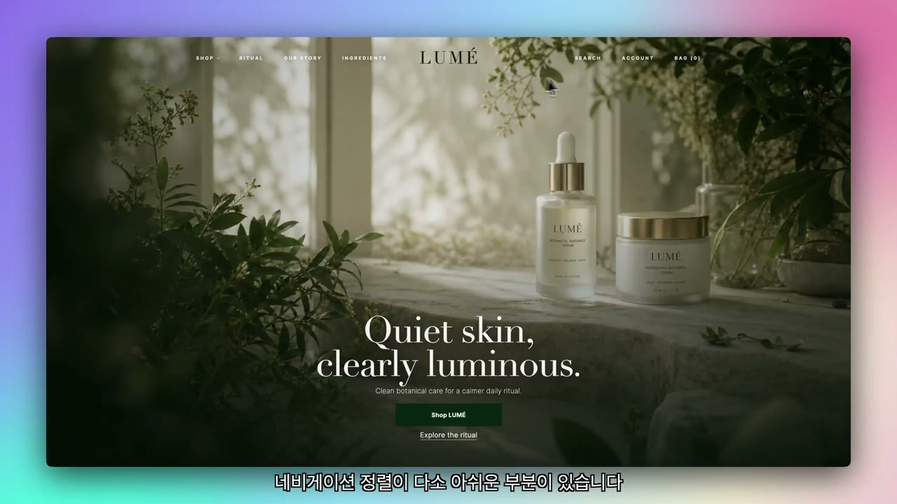
Codex에는 히어로 이미지를 React와 Tailwind로 구현해 달라고 요청한다. 프롬프트에는 전체 너비, 컨테이너 최대 너비, 좌우 마진을 반영하고, 배경은 방금 만든 웹·모바일 에셋을 쓰며, UI와 텍스트는 원본 시안과 최대한 동일하게 구현하라고 적는다. Codex는 로컬호스트 서버를 띄우고 오른쪽 프리뷰 또는 외부 브라우저에서 결과를 확인하게 해준다. 첫 결과는 유사하지만 폰트, 행간, 내비게이션 정렬, 모바일 전환에서 다듬을 부분이 남는다.
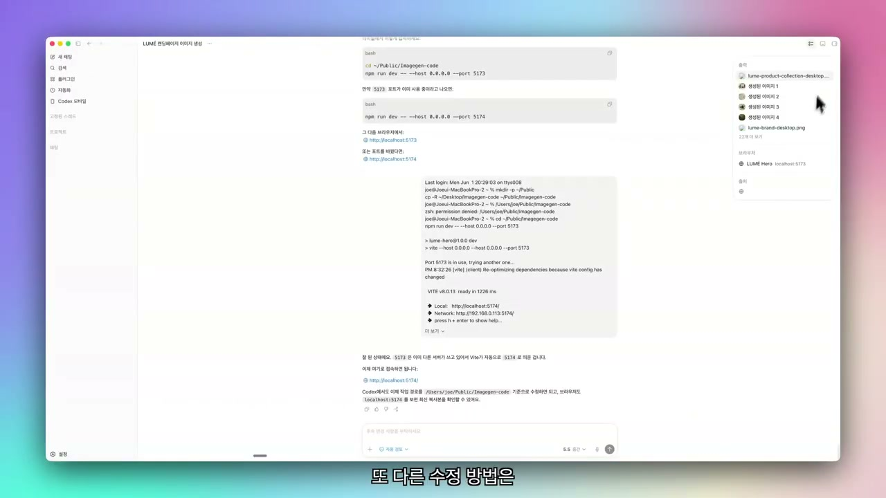
발표자는 수정 과정을 전부 보여주면 길어지므로 방법 중심으로 설명한다. 가장 직관적인 방식은 수정할 부분을 캡처하고 원본 섹션 이미지도 함께 첨부한 뒤, 원하는 방향을 프롬프트로 정교하게 설명하는 것이다. 또 Codex의 주석 달기 기능을 켜면 컴포넌트, 텍스트 영역, 컨테이너 등을 직접 선택해 변경 요청을 달 수 있다. 예시로 헤딩 행간을 줄이고, 콘텐츠 영역을 침범하던 세로 그리드를 제거하도록 요청해 문제가 해결된 것을 확인한다.
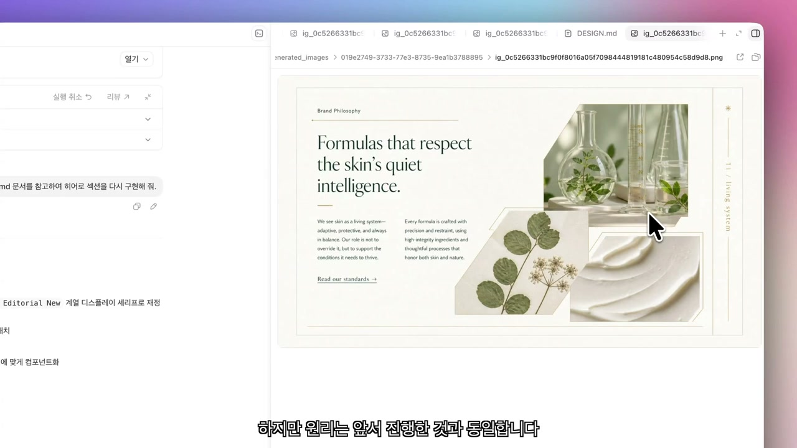
Brand Philosophy 섹션은 오른쪽의 사선 크롭 박스, 얇은 라인, 겹친 에셋 때문에 구현 난도가 높다. 원리는 히어로와 동일하게 필요한 이미지 에셋을 먼저 추출하고, 그 에셋과 원본 섹션 이미지를 함께 넣어 이어서 개발해 달라고 요청하는 방식이다. Product Collection 섹션도 기존 레퍼런스의 벤토 그리드에 맞춰 대체로 잘 구현되지만, 그리드 라인이 콘텐츠를 침범하거나 정렬이 어긋나는 세부 오류가 생긴다. 이런 부분은 주석 기반 수정과 캡처 기반 프롬프트로 반복 개선한다.
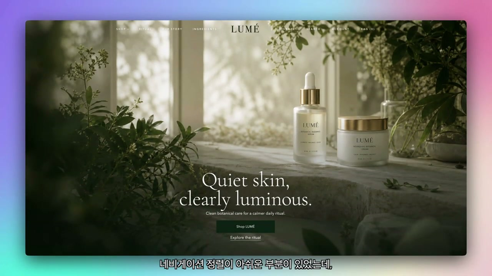
수정 후에는 세 섹션의 레이아웃과 정렬이 더 깔끔해지고, 모바일에서도 안정적으로 전환된다. 화면 폭을 줄이면 태블릿 크기를 거쳐 모바일 크기로 바뀌고, 내비게이션은 메뉴 버튼으로 전환된다. 히어로 이미지는 모바일용으로 교체되어 작은 화면에서도 구성이 유지된다. 발표자는 여기까지 만든 정적 결과물에 애니메이션과 인터랙션을 더해 완성도를 높일 수 있다고 설명한다.
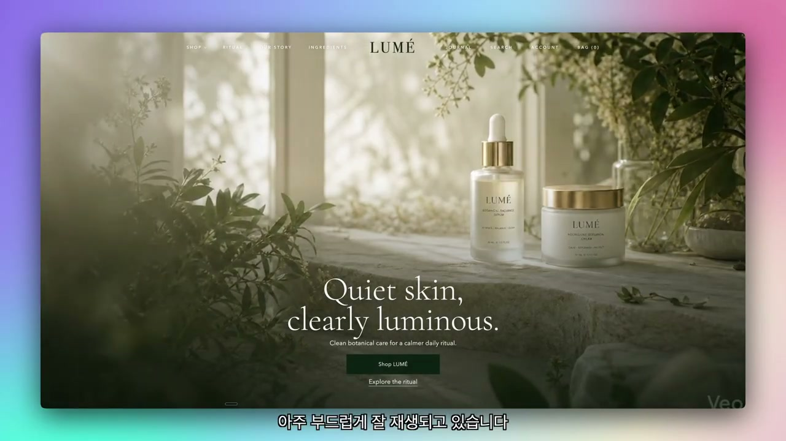
스크롤 시 각 섹션별 요소가 자연스럽게 나타나는 애니메이션을 추가한다. Hero 섹션에는 첫 진입 시 페이드인 효과와 마우스 hover 효과도 적용한다. 추가로 Gemini의 Veo를 사용해 히어로 이미지를 루프형 배경 영상으로 만들고, 다운로드한 영상을 Codex에 업로드해 기존 히어로 이미지와 교체한다. 그 결과 정적인 랜딩 페이지가 더 생동감 있는 웹사이트로 바뀐다.
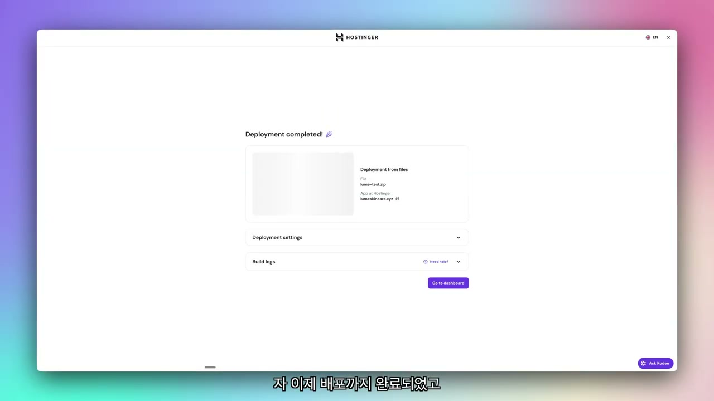
로컬 사이트를 실제 웹사이트로 만들려면 커스텀 도메인 연결과 호스팅 서버 배포가 필요하다. 영상에서는 Hostinger를 추천하며, Premium 플랜으로도 프론트엔드 중심 정적 사이트에는 충분하다고 설명한다. 첫 1년 무료 도메인 혜택을 받기 위해 12개월 기간을 추천하고, 예시 장바구니 가격은 47,988원으로 나온다. 할인 코드 적용 시 추가 10% 할인도 받을 수 있다고 안내한다.
Hostinger의 Node.js 웹 배포 페이지에서 로컬 파일을 압축해 업로드한다. 영상에서는 node_modules, 스크린샷, 디자인 문서 등 배포에 불필요한 파일을 제외하고 하나의 압축 파일로 만드는 과정을 설명한다. 업로드 후 빌드 설정은 Hostinger가 최적값을 잡아주므로 바로 Deploy를 클릭하면 된다고 말한다. 마지막에는 설정한 커스텀 도메인으로 접속해, 로컬에서만 보이던 LUMÉ 사이트가 인터넷상에 라이브로 배포된 것을 확인한다.
이 영상은 Codex를 단순 코드 생성 도구가 아니라, 이미지 시안 생성, 프론트엔드 구현, 반복 수정, 애니메이션 적용, 배포까지 이어지는 end-to-end 제작 환경으로 사용하는 방법을 보여준다. 핵심은 처음부터 코드로 밀어붙이는 것이 아니라, 이미지 생성으로 시각적 방향을 먼저 확보하고, 그중 좋은 섹션을 선별한 뒤 코드와 에셋을 분리해 구현하는 것이다. 프롬프트에는 수치, 레이아웃 기준, 금지 사항, 스타일 방향을 명확히 적고, 수정 단계에서는 캡처와 주석 기능으로 맥락을 주는 것이 효과적이다. 최종적으로 이 방식은 디자이너가 없는 개인 프로젝트나 초기 랜딩 페이지 제작에서 빠른 시안 탐색과 실제 배포를 연결하는 실용적인 워크플로로 정리된다.
댓글
GitHub 이슈 기반 댓글 시스템입니다.